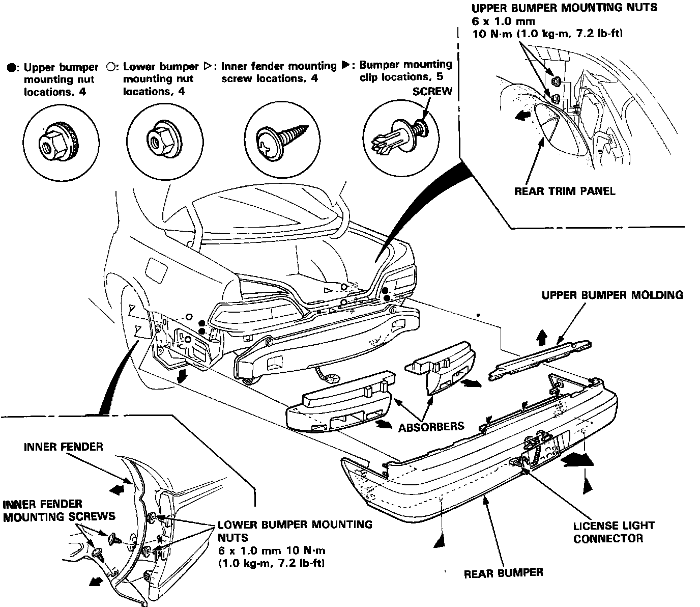
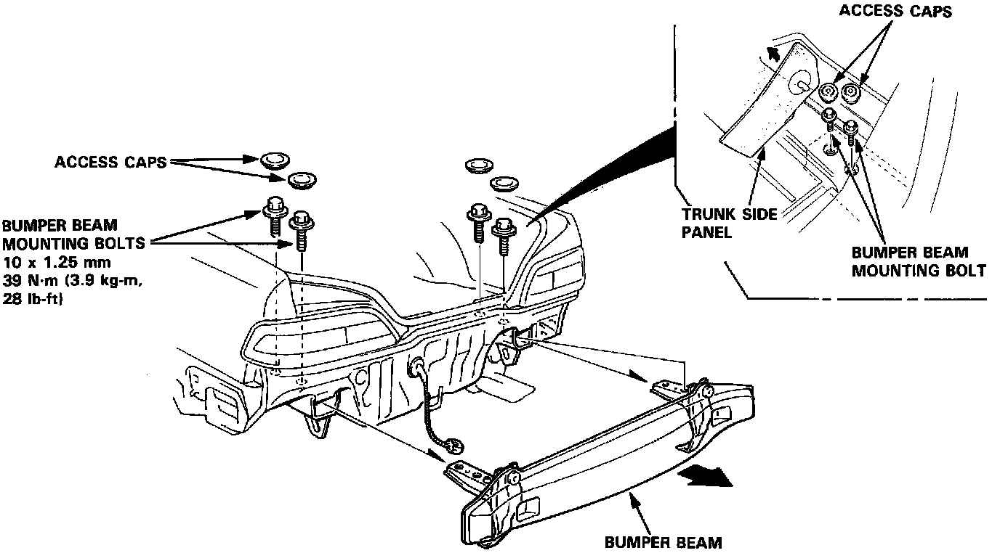
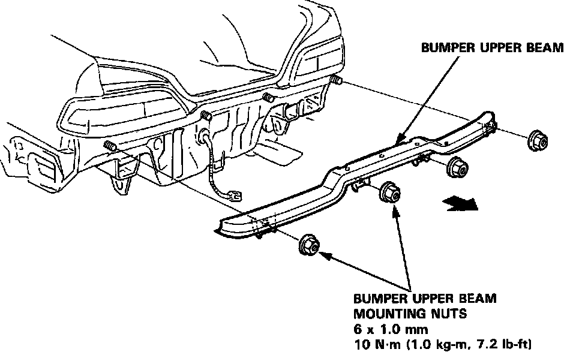

Rear Bumper: Service and Repair
NOTICE: The images in this article are of a Legend sedan, coupe models are similar.Rear Bumper Replacement
CAUTION: Wear gloves to remove and install the rear bumper.

1. Fold the rear trim panel forward and remove the two upper bumper mounting nuts on each side from the trunk area.
2. Remove the two inner fender mounting screws. Move the inner fenders out of the way on each side.
3. Remove the two lower bumper mounting nuts at the front edge of the bumper on each side.
4. Remove the upper bumper molding, then remove the three upper bumper mounting clips.
5. Remove the two lower bumper mounting clips.
6. Pull back the front edge of the bumper on each side, then remove the bumper and absorbers by sliding it backword. it backword.
NOTE:
^ Disconnect the license light connector.
^ An assistant is helpful when removing the bumper.
^ Take care not to scratch the rear bumper.
^ When removing the bumper mounting clips, loosen the screw, then remove the bumper mounting clips with a clip remover.

7. Fold the trunk side panel, and remove the two access caps on each side from the trunk area.
8. Remove the two bumper beam mounting bolts on each side.
9. Remove the bumper beam by sliding it backward.
NOTE: An assistant is helpful when removing the bumper beam.

10. Remove the four bumper upper beam mounting nuts, then remove the bumper upper beam by sliding it backward.
11. Installation is the reverse of the removal procedure.